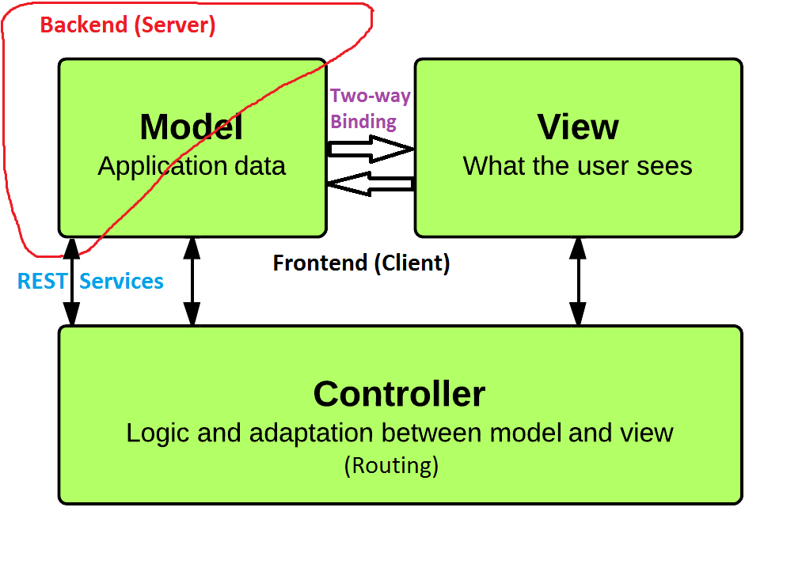

Javascript Frontend MVC Framework
A little history
Static Pages
Generated Pages
PHP
JavaScript & DOM
jQuery
Single Page Webapps
What is AngularJS
AngularJS is an MVC framework for developing component based Javascript Apps in the browser.
- Open Source
- Developed & maintained by Google
- Opinionated
Angular Development Model: MVC
- Data driven, component based
-
Directives
- Look (DOM)
- Behavior (Event Handling)
-
Controller
- Provide data to scope
- Coordinate components & services
MVC
Traditional
Angular SPA
Design Philosophy
- Declarative programming for building UI
- Imperative programming for business logic
Design Goals
- Decouple DOM manipulation from application logic.
- Regard app testing as equal in importance to app writing
- Decouple the client side from the server. Parallel development and reuse.
- Provide structure for the journey of building an app.
Library Functions
- Form Validation
- REST Adapter
- Cookies
- LocalStorage
Niceties
- Small (82kB base Version) & Fast
- Plays very well with others (ex. Can easily use jQuery for DOM manipulation)
- Kills default behaviour on Forms & Links (if necessary)
- Dirty Checking
- Dependency Injection
Let's look at some code!
Simple Input
Reverse
Red Square
TODO List
Creating An Angular App
- Define modules
- Declare dependencies
- Provide services
- Initialize app
Define modules
// New Module
angular.module('someApp',[]);
angular.module('yetAnotherApp',[]);
// New Module with Injected Dependencies
var app = angular.module('calcApp', ['someApp', 'yetAnotherApp']);
Declare Dependencies
(Dependency Injection!)
- Declare and provide services
- Inject services into other services through factories
Provide Services
app.service('MathService', function() {
this.add = function(a, b) { return a + b };
this.subtract = function(a, b) { return a - b };
this.multiply = function(a, b) { return a * b };
this.divide = function(a, b) { return a / b };
});
app.service('CalculatorService', function(MathService){
this.square = function(a) { return MathService.multiply(a,a); };
this.cube = function(a) {
return MathService.multiply(a, MathService.multiply(a,a));
};
});
app.controller('CalculatorController', function($scope, CalculatorService) {
$scope.doSquare = function() {
$scope.answer = CalculatorService.square($scope.number);
}
$scope.doCube = function() {
$scope.answer = CalculatorService.cube($scope.number);
}
});
Initialize app
<div ng-app="calcApp">
...
</div>